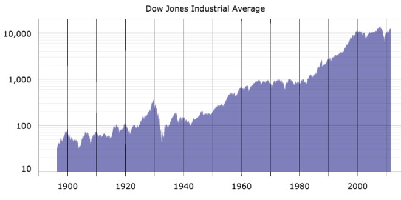

The stock of a company represents the original capital paid into the business by its founders and can be purchased in the form of shares.
Describe the ownership nature of stock
The capital stock (or stock) of a business entity represents the original capital paid into or invested in the business by its founders. It serves as a security for the creditors of a business since it cannot be withdrawn to the detriment of the creditors. Stock is different from the property and assets of a business, both of which may fluctuate in quantity and value. Stock of a company is valued according to market demand and overall business health and this value will fluctuate over time. Ownership of stock represents a stake of ownership in the business entity. The stock is a security that represents equity in the company.
Ownership of shares is documented by issuance of a stock certificate . A stock certificate is a legal document that specifies the amount of shares owned by the shareholder, It also specifies other aspects of the shares like the par value or class of the shares. Other documents will specify what rights come with ownership of certain classes of stock.
A shareholder or stockholder is an individual or institution (including a corporation) that legally owns a share of stock in a public or private corporation. Stockholders or shareholders are considered by some to be a subset of stakeholders, which may include anyone who has a direct or indirect interest in the business entity. For example, labor, suppliers, customers and the community are typically considered stakeholders because they contribute value and/or are impacted by the corporation.
Shareholders have the right of preemption, meaning they have the first chance at buying newly issued shares of stock before the general public.
Explain a shareholders' control and preemption rights
A shareholder or stockholder is an individual or institution (including a corporation) that legally owns a share of stock in a public or private corporation. Stockholders are granted special privileges depending on the class of stock. These rights may include:
Owners of common and preferred stock generally have to wait until debt-holders receive assets after bankruptcy to see any assets after liquidation.
Control and preemption are particular stockholder rights.
A preemption right, or right of preemption, is a contractual right to acquire certain property coming into existence before it can be offered to any other person or entity. This right is frequently applied for shareholders of a business entity as they are usually offered the first chance to buy newly issued shares of stock before it becomes available to the general public. While shareholders are offered the option of early purchase, they do not necessarily have to take it. The incentive to exercise this option is based on the desire to protect individual ownership or stake in a company from dilution. The conditions of preemptive rights will vary from company to company and share type to share type.
Common stock is a form of ownership and equity, different from preferred stock, that still earns rights of ownership for its shareholders.
Describe what benefits a common shareholder receives
Common stock is a form of corporate equity ownership, which is a type of security . The terms "voting share" or "ordinary share" are also used in other parts of the world. "Common stock" is used primarily in the United States. It is called "common" to distinguish it from preferred stock. If both types of stock exist, common stock holders cannot be paid dividends until all preferred stock dividends (including payments in arrears) are paid in full. Should bankruptcy occur, common stock shareholders receive any remaining funds after the bondholders, creditors (including employees), and preferred stockholders. Such shareholders usually receive nothing in the case of company liquidation.
While Common stockholders are generally last in line among other creditors to receive assets should the business in question go bankrupt, common shares do tend to perform better than preferred shares over time. Also, Common stock usually carries the right to vote on certain matters. These matters include but are not limited to deciding for who gets to sit on the board of directors of the company. However, a company can have both a "voting" and "non-voting" class of common stock. Common shareholders do not get guaranteed dividends, so their returns can be uncertain. It must be remembered that Preferred stock generally does not carry voting rights.
Holders of common stock are able to influence the corporation through votes on establishing corporate objectives and policy, stock splits, and electing the company's board of directors. Some holders of common stock also receive preemptive rights, which enable them to retain their proportional ownership in a company should it issue another stock offering.
Preferred stock usually carries no voting rights, but may carry a dividend, have priority over common stock upon liquidation and/or have other benefits.
Describe the rights and obligations of preferred stock
Preferred stock (also called preferred shares, preference shares or simply preferreds) is an equity security with properties of both an equity and a debt instrument , and is generally considered a hybrid instrument. It is senior (i.e. higher ranking) to common stock, but subordinate to bonds in terms of claim (or rights to their share of the assets of the company). In other words, in the case of liquidation or bankruptcy, preferred stock will have claim to assets before common stock, but after corporate bonds or other debt instruments. Preferred Stocks are considered a hybrid security with properties of both stocks and bonds, but are subordinate to bonds when it comes to rights of claim to company assets.
Preferred stock usually carries no voting rights, but may carry a dividend and may have priority over common stock in the payment of dividends and upon liquidation. The specific terms of owning preferred stock are specified in a certificate of designation. The features and rights which are generally associated with preferred stock are as follows:
Similar to bonds, preferred stocks are rated by the major credit-rating companies. The rating for preferreds is generally lower, since preferred dividends do not carry the same guarantees as interest payments from bonds, and they are junior to all creditors.
Details with regards to the rights associated with preferred stock will vary with the business entity that issues the shares, and preferred stock can come in a number of different classes. Some examples are prior preferred stock (highest priority), preference preferred stock, convertible preferred stock (exchangeable for common stock), cumulative preferred stock, exchangeable preferred stock, participating preferred stock, putable preferred stock, monthly income preferred stock, and non-cumulative preferred stock.
In the cases of bankruptcy and dividend distribution, preferred stock shareholders will receive assets before common stock shareholders.
Describe the rights preferred stock has to a company's income
Preferred and common stock have varying claims to income which will change from one equity issuer to another. In general, preferred stock will be given some preference in assets to common assets in the case of company liquidation, but both will fall behind bondholders when asset distribution takes place. In the event of bankruptcy, common stock investors receive any remaining funds after bondholders, creditors (including employees), and preferred stock holders are paid. As such, these investors often receive nothing after a bankruptcy. Preferred stock also has the first right to receive dividends. In general, common stock shareholders will not receive dividends until it is paid out to preferred shareholders. Access to dividends and other rights vary from firm to firm. Preferred and common stock both carry rights of ownership, but represent different classes of equity ownership.
Preferred stock may or may not have a fixed liquidation value (or par value) associated with it. This represents the amount of capital that was contributed to the corporation when the shares were first issued. Preferred stock has a claim on liquidation proceeds of a stock corporation equal to its par (or liquidation) value, unless otherwise negotiated. This claim is senior to that of common stock, which has only a residual claim.
Both types of stock can have a claim to income in the form of capital appreciation as well. As company value increases based on market determinants, the value of equity held in this company also will increase. This translates to a return on investment to shareholders. This will be different to common stock shareholders and preferred stock shareholders because of the different prices and rewards based on holding these different kinds of shares. In turn, should market forces decrease, the value of equity held will decrease as well, reflecting a loss on investment and, therefore, a decrease on the value of any claims to income for shareholders.
Common stock generally carries voting rights, while preferred stock does not; however, this will vary from company to company.
Summarize the voting rights associated with common and preferred stock
Common stock can also be referred to as a "voting share. " Common stock usually carries with it the right to vote on business entity matters, such as electing the board of directors, establishing corporate objectives and policy, and stock splits. However, common stock can be broken into voting and non-voting classes. While having superior rights to dividends and assets over common stock, generally preferred stock does not carry voting rights.
The matters that a stockholder gets to vote on vary from company to company. In many cases, the shareholder will be able to vote for members of a company board of directors and, in general, each share gets a vote as opposed to each shareholder. Therefore, a single investor who owns 300 shares will have more say in a voting matter than a single shareholder that owns 30.
Many of the voting rights of a shareholder can be exercised at annual general body meetings of companies. An annual general meeting is a meeting that official bodies and associations involving the general public (including companies with shareholders) are often required by law (or the constitution, charter, by-laws, etc., governing the body) to hold. An AGM is held every year to elect the board of directors and inform their members of previous and future activities. It is an opportunity for the shareholders and partners to receive copies of the company's accounts, as well as reviewing fiscal information for the past year and asking any questions regarding the directions the business will take in the future. Shareholders also have the option to mail their votes in if they cannot attend the shareholder meetings. In 2007, the Securities and Exchange Commission voted to require all public companies to make their annual meeting materials available online. Shareholders with the right to vote will have numerous options in how to make their voice heard with regards to voting matters should they choose to.
New shares can be purchased on exchanges and current shareholders will usually have preemptive rights to newly issued shares.
Discuss the process and implication of purchasing new shares by a shareholder that already holds shares in a company
New share purchases are an important action by share shareholders, since it requires a further investment in a business entity and is a reflection of a shareholder's decision to maintain an ownership position in a company, or a potential investor's belief that purchasing equity in a company will be an investment that grows in value.
Current shareholders may have preemptive rights over new shares offered by the company. In practice, the most common form of preemption right is the right of existing shareholders to acquire new shares issued by a company in a rights issue, a usually but not always public offering. In this context, the pre-emptive right is also called "subscription right" or "subscription privilege. " This is the right, but not the obligation, of existing shareholders to buy the new shares before they are offered to the public. In this way, existing shareholders can maintain their proportional ownership of the company, preventing stock dilution.
New shares may be purchased over the same exchange mechanisms that previous stock was acquired. A stock exchange is a form of exchange which provides services for stock brokers and traders to trade stocks, bonds, and other securities. Stock exchanges also provide facilities for issue and redemption of securities and other financial instruments, and capital events, including the payment of income and dividends. The initial offering of stocks and bonds to investors is by definition done in the primary market and subsequent trading is done in the secondary market. A stock exchange is often the most important component of a stock market. Supply and demand in stock markets are driven by various factors that, as in all free markets, affect the price of stocks.
Preferred stock can include rights such as preemption, convertibility, callability, and dividend and liquidation preference.
List the rights that preferred stock generally has
Preferred stock usually carries no voting rights, but may carry a dividend and may have priority over common stock in the payment of dividends and upon liquidation. Terms of the preferred stock are stated in a "Certificate of Designation. Preferred stock is a security ( a little more modern that this stock from the VOC or Dutch East India Company) that carries certain rights which designate it from common stock or debt.
Preferred stock is a special class of shares that may have any combination of features not possessed by common stock. The following features are usually associated with preferred stock: Preference in dividends preference in assets, in the event of liquidation, convertibility to common stock, callability, and at the option of the corporation. Some preferred shares have special voting rights to approve extraordinary events (such as the issuance of new shares or approval of the acquisition of a company) or to elect directors, but, once again, most preferred shares have no voting rights associated with them. Some preferred shares gain voting rights when the preferred dividends are in arrears for a substantial time.
Preferred stock may or may not have a fixed liquidation value (or par value) associated with it. This represents the amount of capital which was contributed to the corporation when the shares were first issued. Preferred stock has a claim on liquidation proceeds of a stock corporation equal to its par (or liquidation) value, unless otherwise negotiated. This claim is senior to that of common stock, which has only a residual claim.Almost all preferred shares have a negotiated, fixed-dividend amount. The dividend is usually specified as a percentage of the par value, or as a fixed amount. Sometimes, dividends on preferred shares may be negotiated as floating; they may change according to a benchmark interest-rate index. Preferred stock may also have rights to cumulative dividends.
Preferred shares have numerous rights which can be attached to them, such as cumulative dividends, convertibility, and participation.
Describe in detail the different types of provisions for preferred stock
Preferred stock may be entitled to numerous rights, depending on what is designated by the issuer. One of these rights may be the right to cumulative dividends. Preferred stock shareholders already have rights to dividends before common stock shareholders, but cumulative preferred shares contain the provision that should a company fail to pay out dividends at any time at the stated rate, then the issuer will have to make up for it as time goes on.
Convertible preferred stock can be exchanged for a predetermined number of company common stock shares. Generally, this can occur at the discretion of the investor, and he or she may pick any time to do so and, therefore, take advantage of fluctuations in the price of common stock. Once converted, the common stock cannot be converted back to preferred status.
Often times companies will keep the right to call or buy back preferred shares at a predetermined price. These shares are callable shares.
There is a class of preferred shares known as "participating preferred stock. " These preferred issues offer holders the opportunity to receive extra dividends if the company achieves predetermined financial goals. Investors who purchased these stocks receive their regular dividend regardless of company performance (assuming the company does well enough to make its annual dividend payments). If the company achieves predetermined sales, earnings, or profitability goals, the investors receive an additional dividend.
Almost all preferred shares have a negotiated, fixed-dividend amount. The dividend is usually specified as a percentage of the par value, or as a fixed amount. Sometimes, dividends on preferred shares may be negotiated as floating; they may change according to a benchmark interest-rate index or floating rate. An example of this would be tying the dividend rate to LIBOR.
Common stock, preferred stock, and debt are all securities that a company may offer; each of these securities carries different rights.
Differentiate between the rights of common shareholders, preferred shareholders, and bond holders
Common Stock and Preferred Stock are both methods of purchasing equity in a business entity.
Common stock generally carries voting rights along with it, while preferred shares generally do not.
Preferred shares act like a hybrid security, in between common stock and holding debt. Preferred stock can (depending on the issue) be converted to common stock and have access to accumulated dividends and multiple other rights. Preferred stock also has access to dividends and assets in the case of liquidation before common stock does.
However, both common and preferred stock fall behind debt holders when it comes to claims to assets of a business entity should bankruptcy occur. Common shareholders often do not receive any assets after bankruptcy as a result of this principle. However, common stock shareholders can theoretically use their votes to affect company decision making and direction in a way they believe will help the company avoid liquidation in the first place.
Debt can be "purchased" from a company in the form of a bond. A bond is a financial security that represents a promise by a company or government to repay a certain amount, with interest, to the bondholder.
In finance, a bond is an instrument of indebtedness of the bond issuer to the holders. It is a debt security, under which the issuer owes the holders a debt and, depending on the terms of the bond, is obliged to pay them interest and/or to repay the principal at a later date, termed the maturity. Therefore, a bond is a form of loan or IOU: the holder of the bond is the lender (creditor), the issuer of the bond is the borrower (debtor), and the coupon is the interest. Bonds provide the borrower with external funds to finance long-term investments, or, in the case of government bonds, to finance current expenditure.
Bonds and stocks are both securities, but the major difference between the two is that (capital) stockholders have an equity stake in the company (i.e., they are owners), whereas, bondholders have a creditor stake in the company (i.e., they are lenders). Another difference is that bonds usually have a defined term, or maturity, after which the bond is redeemed, whereas stocks may be outstanding indefinitely.
Market actors include individual retail investors, mutual funds, banks, insurance companies, hedge funds, and corporations.
Identify the different actors that participate in a stock market
The individual actors in the financial markets can be broken down into three main categories: investors, intermediaries, and issuers. Specifically, market actors include individual retail investors, institutional investors such as mutual funds, banks, insurance companies and hedge funds, and also publicly traded corporations trading in their own shares. The value of a stock is derived from buying and selling decisions of these actors. Some studies have suggested that institutional investors and corporations trading in their own shares generally receive higher risk-adjusted returns than retail investors .
An investor is someone who allocates capital with the expectation of a financial return. The types of investments include, — equity, debt securities, real estate, currency, commodity, derivatives such as put and call options, etc. A few decades ago, worldwide, buyers and sellers were individual investors, such as wealthy businessmen, usually with long family histories to particular corporations. Over time, markets have become more "institutionalized. " Buyers and sellers are largely institutions. Investors can include: pension funds, insurance companies, mutual funds, index funds, exchange-traded funds, and hedge funds.
The issuer is a legal entity that develops, registers, and sells securities for the purpose of financing its operations. Issuers may be domestic or foreign governments, corporations, or investment trusts.
Financial institutions (intermediaries) perform the vital role of bringing together those economic agents with surplus funds who want to lend, with those with a shortage of funds who want to borrow. The classic example of a financial intermediary is a bank that consolidates bank deposits and uses the funds to transform them into bank loans. Other classes of intermediaries include: credit unions, financial advisers or brokers, collective investment schemes, and pension funds.
A pension fund is any plan, fund, or scheme that provides retirement income.
Pension funds are important shareholders of listed and private companies. They are especially important to the stock market where large institutional investors dominate. The largest 300 pension funds collectively hold about \$6 trillion in assets. In January 2008, The Economist reported that Morgan Stanley estimates that pension funds worldwide hold over \$20 trillion in assets, the largest for any category of investor ahead of mutual funds, insurance companies, currency reserves, sovereign wealth funds, hedge funds, or private equity.
Insurance companies are generally classified as either mutual or proprietary companies. Mutual companies are owned by the policyholders, while shareholders (who may or may not own policies) own proprietary insurance companies.
A mutual fund is a type of professionally-managed collective investment vehicle that pools money from many investors to purchase securities. While there is no legal definition of mutual fund, the term is most commonly applied only to those collective investment vehicles that are regulated, available to the general public, and open-ended in nature. Hedge funds are not considered a type of mutual fund.
There are three types of U.S. mutual funds: open-end, unit investment trust, and closed-end. The most common type, the open-end mutual fund, must be willing to buy back its shares from its investors at the end of every business day. Exchange-traded funds are open-end funds or unit investment trusts that trade on an exchange. Open-end funds are most common, but exchange-traded funds have been gaining in popularity.
An index fund or index tracker is a collective investment scheme (usually a mutual fund or exchange-traded fund) that aims to replicate the movements of an index of a specific financial market, or a set of rules of ownership that are held constant, regardless of market conditions. As of 2007, index funds made up over 11% of equity mutual fund assets in the United States.
An exchange-traded fund (ETF) is an investment fund traded on stock exchanges, much like stocks. An ETF holds assets such as stocks, commodities, or bonds, and trades close to its net asset value over the course of the trading day. Most ETFs track an index, such as a stock index or bond index. ETFs may be attractive as investments because of their low costs, tax efficiency, and stock-like features. ETFs are the most popular type of exchange-traded product.
A hedge fund is an fund that can undertake a wider range of investment and trading activities than other funds. It is generally only open to certain types of investors specified by regulators. These investors are typically institutions, such as pension funds, university endowments and foundations, or high-net-worth individuals, who are considered to have the knowledge or resources to understand the nature of the funds. As a class, hedge funds invest in a diverse range of assets, but they most commonly trade liquid securities on public markets. They also employ a wide variety of investment strategies, and make use of techniques such as short selling and leverage.
The New York Stock Exchange is the world's largest stock exchange by market capitalization at \$14.242 trillion as of December 2011.
Distinguish the New York Stock Exchange from other stock exchanges
The New York Stock Exchange, commonly referred to as the NYSE, is a stock exchange, or a secondary market. With primary issuances of securities or financial instruments, or the primary market, investors purchase these securities directly from issuers such as corporations issuing shares in an IPO or private placement, or directly from the federal government in the case of treasuries.
After the initial issuance, investors can purchase from other investors in secondary markets like the NYSE. If an investor wished to buy a stock from Apple, for example, the actual company is not directly involved. Secondary markets can be further subdivided into auction or dealer markets, typified by the mode of transactions. The NYSE is an auction market. Buyers and sellers meet at a physical location (in this case, Wall Street) and announce their bid or ask prices.
At the NYSE, traders gather around a specialist broker, who acts as an auctioneer in an open outcry auction market environment to bring buyers and sellers together and to manage the actual auction. The auction market format aims to bring together the parties with mutually agreeing prices in an efficient manner. The auction process moved toward automation in 1995 through the use of wireless hand held computers (HHC). The system enabled traders to receive and execute orders electronically via wireless transmission .
The NYSE is by far the world's largest stock exchange by market capitalization of its listed companies at \$14.242 trillion as of December 2011, and most of the largest US companies are listed on the NYSE. The NYSE's biggest competitor is NASDAQ; both are major secondary markets vying for large and profitable companies to list on their exchange.
Secondary markets like the NYSE serve a vital function as a setting where companies can raise capital for expansion through selling shares to the investing public. They also gain advertising and a boost in prestige, which likely increases their stock value. To be able to trade a security on the NYSE, it must be listed. To be listed on the New York Stock Exchange, a company must have issued at least a million shares of stock worth \$100 million and must have earned more than \$10 million over the last three years. They must also disclose certain information to the exchange, providing a measure of transparency that prevents insider manipulation of the stock prices.
The NASDAQ is an American dealer-based stock market in which the dealers sell electronically to investors or firms.
Distinguish the NASDAQ from other stock exchanges
The NASDAQ Stock Market, also known simply as the NASDAQ, is an American stock exchange. "NASDAQ" originally stood for "National Association of Securities Dealers Automated Quotations. " It is one of the largest stock exchanges in the world along with the New York Stock Exchange.
The NASDAQ is a dealer-based market in which stock dealers sell directly to investors or firms electronically via phone or Internet. The New York Stock Exchange conducts its trading in person.
NASDAQ was founded in 1971 by the National Association of Securities Dealers (NASD), who divested themselves of it in a series of sales in 2000 and 2001. It is owned and operated by the NASDAQ OMX Group and regulated by the Financial Industry Regulatory Authority (FINRA), the successor to the NASD.
When the NASDAQ stock exchange began trading on February 8, 1971, it was the world's first electronic stock market. At first, it was merely a computer bulletin board system and did not actually connect buyers and sellers. The NASDAQ helped lower the spread (the difference between the bid price and the ask price of the stock), but paradoxically was unpopular among brokerages because they made much of their money on the spread.
Firms including Microsoft began doing business through NASDAQ early in their history, and remained with this exchange as the technology industry boomed. NASDAQ became known for its concentration of tech and high-growth firms, making it the primary tech market and an indicator for industry trends.
A stock index or stock market index is a method of measuring the value of a section of the stock market. It is computed from the prices of selected stocks, which vary depending on the index. Investors and financial managers can use it as a "snapshot" to describe the market conditions, and also as a tool to compare the return on specific investments. NASDAQ's major indices include:
The NASDAQ Composite is often referred to as the NASDAQ. It is calculated from weighting common stocks and similar securities listed on the NASDAQ stock market. Thus "NASDAQ" can mean two things: either the stock exchange itself, or the index.
Market indices provide valuable information for stock valuation.
Explain how a market index works and its purpose
A stock index or stock market index is a method of measuring the value of a section of the stock market. It is computed from the prices of selected stocks (sometimes a weighted average). It is a tool used by investors and financial managers to describe the market and to compare the return on specific investments.
This graph shows the general increase in the DJIA over the last century. Particularly notable is the growth from around 1,000 points in the late 1980s to around 10,000 points in 2005.
An index is a mathematical construct, so it may not be invested in directly. Many mutual funds and exchange-traded funds attempt to "track" an index. The funds that do may not be judged against those that do.
Stock market indices may be classed in many ways. A 'world' or 'global' stock market index includes (typically large) companies without regard for where they are domiciled or traded. Two examples are MSCI World and S&P Global 100.
A 'national' index represents the performance of the stock market of a given nation—and by proxy, reflects investor sentiment on the state of its economy. The most regularly quoted market indices are national indices composed of the stocks of large companies listed on a nation's largest stock exchanges, such as the American S&P 500, the Japanese Nikkei 225, the Brazilian Ibovespa, the Russian RTSI, the Indian SENSEX, and the British FTSE 100.
Stock market indices provide invaluable information for investors and accountants. For example, the current market price per share, market capitalization, and trading volume are all readily available. With this information, along with a company's consolidated financial statements, the following ratios and calculations can be performed:
By comparing the above ratios with those of other companies, investors, accountants, and forecasters can determine the position and health of their respective company's stock.
A no-growth company would be expected to return high dividends under traditional finance theory.
Describe how a company should make a dividend decision when it expect no growth
Whether to issue dividends and what amount is calculated mainly on the basis of the company's unappropriated profit and its earning prospects for the coming year. The amount is also often calculated based on expected free cash flows, which means cash remaining after all business expenses, and capital investment needs have been met.
If there are no favorable investment opportunities–projects where return exceed the hurdle rate–finance theory suggests that management will return excess cash to shareholders as dividends. However, there are exceptions. For example, shareholders of a "growth stock," expect that the company will, almost by definition, retain earnings so as to fund growth internally.
At the other end of the spectrum, investors of a "no growth," or value stock will expect the firm to retain little cash for investment, and to distribute a comparatively greater proportion to investors as a dividend.
This suggests that a particular pattern of dividend payments may suit one type of stock holder more than another; this is sometimes called the "clientele effect. " A retiree may prefer to invest in a firm that provides a consistently high dividend yield, whereas a person with a high income from employment may prefer to avoid dividends due to their high marginal tax rate on income. If clienteles exist for particular patterns of dividend payments, a firm may be able to maximize its stock price and minimize its cost of capital by catering to a particular clientele. This model may help to explain the relatively consistent dividend policies followed by mostlisted companies.
No growth, high dividend stocks may appeal to value investors. Value investing involves buying securities with shares that appear underpriced by some form of fundamental analysis. As examples, such securities may be stock in public companies that have high dividend yields, low price-to-earning multiples, or have low price-to-book ratios. Thus, high dividends and low reinvestment of retained earnings can signal an appealing value stock to an investor. Value investors trade growth for dividends.
Valuations rely heavily on the expected growth rate of a company; past growth rate of sales and income provide insight into future growth.
Calculate a company's stock price using the Constant Growth Approximation
Valuations rely very heavily on the expected growth rate of a company. One must look at the historical growth rate of both sales and income to get a feeling for the type of future growth expected. However, companies are constantly changing, as well as the economy, so solely using historical growth rates to predict the future is not an acceptable form of valuation. Instead, they are used as guidelines for what future growth could look like if similar circumstances are encountered by the company. Calculating the future growth rate requires personal investment research. This may take form in listening to the company's quarterly conference call or reading a press release or other another company article that discusses the company's growth guidance. However, although companies are in the best position to forecast their own growth, they are far from accurate. Unforeseen events could cause rapid changes in the economy and in the company's industry.
And for any valuation technique, it's important to look at a range of forecast values.
The PEG ratio is a special case in the Sum of Perpetuities Method (SPM) equation. A generalized version of the Walter model (1956), SPM considers the effects of dividends, earnings growth, as well as the risk profile of a firm on a stock's value. Derived from the compound interest formula using the present value of a perpetuity equation, SPM is an alternative to the Gordon Growth Model. The variables are:
Constant Growth Approximation
The Gordon model or Gordon's growth model is the best known of a class of discounted dividend models . It assumes that dividends will increase at a constant growth rate (less than the discount rate) forever. The valuation is given by the formula:
$P=D*\sum _{ i=1 }^{ \infty }{ { (\frac { 1+g }{ 1+k } ) }^{ i } } =D*\frac { 1+g }{ k-g }$
The portion of the earnings not paid to investors is, ideally, left for investment in order to provide for future earnings growth.
Describe the relationship between dividend payments and a company's growth
From an investor's point of view, the fundamentals of a company are of the utmost importance. One such fundamental that that investors take into account is how much capital is distributed to investors, and conversely how much capital is kept from investors. Capital is distributed to investors via dividend payments and, indirectly, through capital gains. Capital that is kept from investors is known as retained earnings. Investors hope that firms will use retained earnings to either maximize their current operations or invest in such as a way as to lead to higher profits. In other words, the portion of profits not paid out to investors via dividends is, ideally, left for investment in order to provide for future earnings growth.
Some companies require large amounts of new capital just to continue operations. Such firms are usually unable to distribute earnings, since their funds are tied up in maintenance, repairs, et cetera. These companies also provide limited growth opportunities, since earnings are not reinvested for the purpose of growth. On the other hand, some companies can retain earnings and put that money back to work - i.e., invest in growth opportunities. Firms that can do this tend to retain more of their earnings. These firms are attractive to investors, even though there is relatively low distribution of profits.
Put succinctly, investors seeking high current income and limited capital growth prefer companies with a high dividend payout ratio. However, investors seeking higher capital growth may prefer a lower payout ratio because capital gains are taxed at a lower rate. High growth firms in early life generally have low or zero payout ratios in order to reinvest as much of their earnings as possible. As they mature, they tend to return more of the earnings back to investors. Note that dividend payout ratio is calculated as dividend per share divided by earnings per share.
There are many different ways to appraise the future value of stocks, including fundamental criteria and stock valuation methods.
Describe different ways of valuing stock
In financial markets, stock valuation involves calculating theoretical values of companies and their stocks. The main use of stock valuation is to predict future market prices and profit from price changes. Stocks that are judged as undervalued (with respect to their theoretical value) are bought, while stocks that are perceived to be overvalued are sold, in the expectation that undervalued stocks will, on the whole, rise, while overvalued stocks will, on the whole, fall .
The soundest stock valuation method, the discounted cash flow (DCF) method of income valuation, involves discounting the profits (dividends, earnings, or cash flows) the stock will bring to stockholders in the foreseeable future, and calculating a final value on disposal. The discounted rate normally includes a risk premium which is often based on the capital asset pricing model.
There are many different ways to value stocks. The key is to take each approach into account while formulating an overall opinion of the stock. If the valuation of a company is lower or higher than other similar stocks, then the next step would be to determine the reasons for the discrepancy.
EPS is the total net income of the company divided by the number of shares outstanding. Numbers are usually reported as a GAAP EPS number (which means it is computed using mutually agreed upon accounting rules) and a Pro Forma EPS figure (income is adjusted to exclude any one time items as well as some non-cash items like amortization of goodwill or stock option expenses).
Once one has several EPS figures (historical and forecasts), the most common valuation technique used by analysts is the price to earnings ratio, or P/E. To compute this figure, the stock price is divided by the annual EPS figure.
This valuation technique has become more popular over the past decade or so. It is better than just looking at a P/E because it takes three factors into account: the price, earnings, and earnings growth rates. To compute the PEG ratio, divide the Forward P/E by the expected earnings growth rate (historical P/E and historical growth rate are also used to see where the stock has traded in the past).
This valuation technique measures how much money the company makes each year per dollar of invested capital. Invested capital is the amount of money invested in the company by both stockholders and debtors. The ratio is expressed as a percent and Return on Invested Capital ratio should have a percent that approximates the expected level of growth. In its simplest definition, this ratio measures the investment return that management is able to get for its capital. The higher the number, the better the return.
Similar to ROIC, ROA, expressed as a percent, measures the company's ability to make money from its assets. To measure the ROA, take the pro forma net income divided by the total assets. However, because of very common irregularities in balance sheets (due to things like goodwill, write-offs, discontinuations, etc. ) this ratio is not always a good indicator of the company's potential. If the ratio is higher or lower than expected, be sure to look closely at the assets to see what could be overstating or understating the figure.
This figure is useful because it compares the current stock price to the annual sales. In other words, it tells you how much the stock costs per dollar of sales earned.
Market Cap, which is short for Market Capitalization, is the value of all of the company's stock. To measure it, multiply the current stock price by the fully diluted shares outstanding.
Enterprise Value is equal to the total value of the company, as trading on the stock market. To compute it, add the Market Cap (see above) and the total net debt of the company.
EBITDA stands for earnings before interest, taxes, depreciation and amortization. It is one of the best measures of a company's cash flow and is used for valuing both public and private companies.
This is perhaps one of the best measurements of whether or not a company should be valued as cheap or expensive. To compute, divide the EV by EBITDA (see above for calculations). The higher the number, the more expensive the company is.
Limited high-growth approximation, implied growth models, and the imputed growth acceleration ratio are used to value nonconstant growth dividends.
Describe the limitations of valuing a company with dividends that have a nonconstant growth rate
When a stock has a significantly higher growth rate than its peers, it is sometimes assumed that the earnings growth rate will be sustained for a short time (say, 5 years), and then the growth rate will revert to the mean. This is probably the most rigorous approximation that is practical.
While these DCF models are commonly used, the uncertainty in these values is hardly ever discussed. Note that the models diverge for and hence are extremely sensitive to the difference of dividend growth to discount factor. One might argue that an analyst can justify any value (and that would usually be one close to the current price supporting his call) by fine-tuning the growth/discount assumptions.
One can use the Gordon model or the limited high-growth period approximation model to impute an implied growth estimate. To do this, one takes the average P/E and average growth for a comparison index, uses the current (or forward) P/E of the stock in question, and calculates what growth rate would be needed for the two valuation equations to be equal. This gives you an estimate of the "break-even" growth rate for the stock's current P/E ratio. (Note: we are using earnings not dividends here because dividend policies vary and may be influenced by many factors including tax treatment).
Subsequently, one can divide this imputed growth estimate by recent historical growth rates. If the resulting ratio is greater than one, it implies that the stock would need to experience accelerated growth relative to its prior recent historical growth to justify its current P/E (higher values suggest potential overvaluation). If the resulting ratio is less than one, it implies that either the market expects growth to slow for this stock or that the stock could sustain its current P/E with lower than historical growth (lower values suggest potential undervaluation). Comparison of the IGAR across stocks in the same industry may give estimates of relative value. IGAR averages across an industry may give estimates of relative expected changes in industry growth (e.g. the market's imputed expectation that an industry is about to "take-off" or stagnate). Naturally, any differences in IGAR between stocks in the same industry may be due to differences in fundamentals, and would require further specific analysis.
Three approaches are commonly used in corporation valuation: the income approach, the asset-based approach, and the market approach.
Distinguish between the income, asset-based, and market approaches for corporate valuation
Corporation valuation is a process and a set of procedures used to estimate the economic value of an owner's interest in a business. Valuation is used by financial market participants to determine the price they are willing to pay or receive to perfect the sale of a business. In addition to estimating the selling price of a business, the same valuation tools are often used by business appraisers to resolve disputes related to estate and gift taxation, divorce litigation, allocate business purchase price among business assets, establish a formula for estimating the value of partners' ownership interest for buy-sell agreements, and many other business and legal purposes.
Three different approaches are commonly used in business valuation: the income approach, the asset-based approach, and the market approach. Within each of these approaches, there are various techniques for determining the value of a business using the definition of value appropriate for the appraisal assignment. Generally, the income approach determines value by calculating the net present value of the benefit stream generated by the business (discounted cash flow); the asset-based approach determines value by adding the sum of the parts of the business (net asset value); and the market approach determines value by comparing the subject company to other companies in the same industry, of the same size, and/or within the same region.
A discount rate or capitalization rate is used to determine the present value of the expected returns of a business. The discount rate and capitalization rate are closely related to each other, but are distinguishable. Generally speaking, the discount rate or capitalization rate may be defined as the yield necessary to attract investors to a particular investment, given the risks associated with that investment.
The Capital Asset Pricing Model (CAPM) is one method of determining the appropriate discount rate in business valuations. The CAPM method originated from the Nobel Prize winning studies of Harry Markowitz, James Tobin, and William Sharpe. The CAPM method derives the discount rate by adding a risk premium to the risk-free rate. In this instance, however, the risk premium is derived by multiplying the equity risk premium times "beta," which is a measure of stock price volatility. Beta is published by various sources for particular industries and companies. Beta is associated with the systematic risks of an investment.
The Cost of Equity (Ke) is computed by using the Modified Capital Asset Pricing Model
CAPM Model ke = Rf + B ( Rm-Rf) + SCRP + CSRP Where: Rf = Risk free rate of return (Generally taken as 10-year Government Bond Yield) B = Beta Value (Sensitivity of the stock returns to market returns) Ke = Cost of Equity Rm= Market Rate of Return SCRP = Small Company Risk Premium, CSRP= Company specific Risk premium
The weighted average cost of capital is an approach used to determine a discount rate. The WACC method determines the subject company's actual cost of capital by calculating the weighted average of the company's cost of debt and cost of equity. The WACC must be applied to the subject company's net cash flow to total invested capital.
The value of asset-based analysis of a business is equal to the sum of its parts. That is the theory underlying the asset-based approaches to business valuation. The asset approach to business valuation is based on the principle of substitution: no rational investor will pay more for the business assets than the cost of procuring assets of similar economic utility. In contrast to the income-based approaches, which require the valuation professional to make subjective judgments about capitalization or discount rates, the adjusted net book value method is relatively objective.
The market approach to business valuation is rooted in the economic principle of competition: that in a free market the supply and demand forces will drive the price of business assets to a certain equilibrium. Buyers would not pay more for the business, and the sellers will not accept less than the price of a comparable business enterprise. It is similar in many respects to the "comparable sales" method that is commonly used in real estate appraisal. The market price of the stocks of publicly traded companies engaged in the same or a similar line of business, whose shares are actively traded in a free and open market, can be a valid indicator of value when the transactions in which stocks are traded are sufficiently similar to permit meaningful comparison.
The dividend discount model values a firm at the discounted sum of all of its future dividends, and does not factor in income or assets.
Calculate a company's stock price using the discounted dividend formula
The dividend discount model (DDM) is a way of valuing a company based on the theory that a stock is worth the discounted sum of all of its future dividend payments. In other words, it is used to value stocks based on the net present value of the future dividends. The equation most always used is called the "Gordon Growth Model. " It is named after Myron J. Gordon who originally published it in 1959, although the theoretical underpin was provided by John Burr Williams in his 1938 text The Theory of Investment Value.
Income plus capital gains equals total return:
The equation can also be understood to generate the value of a stock such that the sum of its dividend yield (income) plus its growth (capital gains) equals the investor's required total return. Consider the dividend growth rate as a proxy for the growth of earnings and by extension the stock price and capital gains. Consider the company's cost of equity capital as a proxy for the investor's required total return.
Income + Capital Gain = Total Return
Dividend Yield + Growth = Cost of Equity
{kind=link}